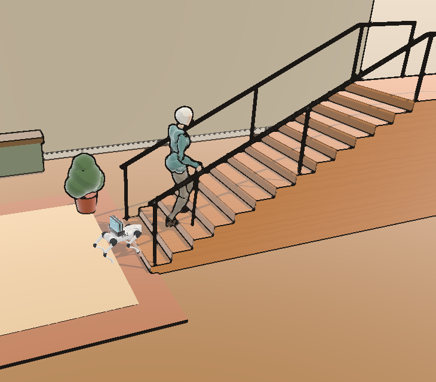
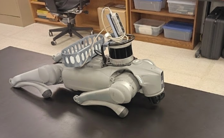
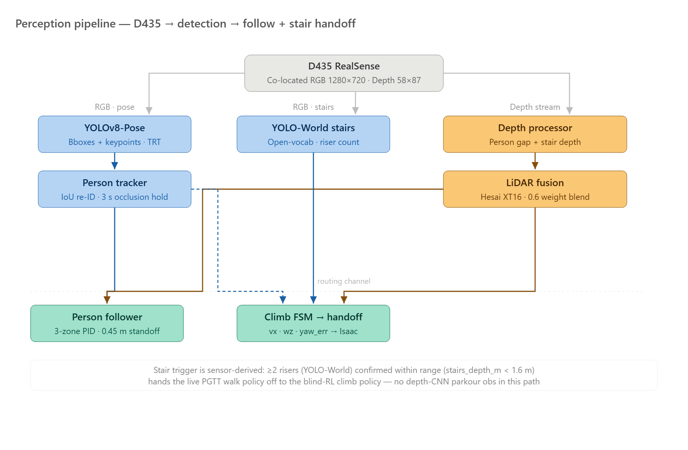
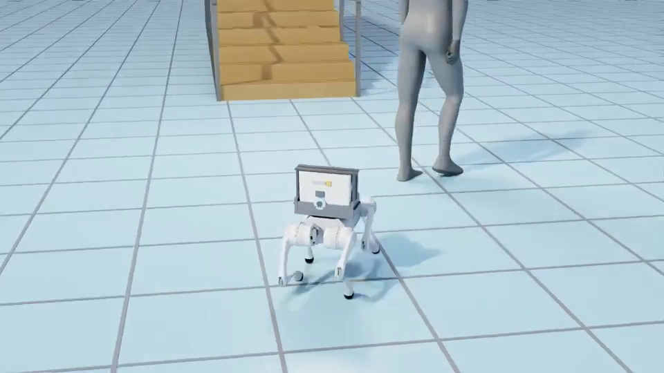
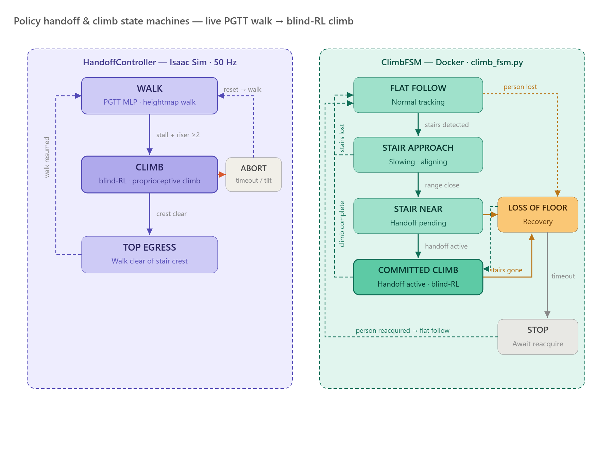
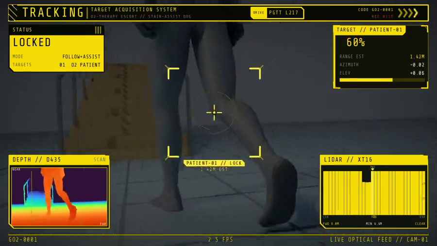

Patients on long-term oxygen therapy must haul a portable concentrator everywhere — stairs are the highest fall-risk, highest-exertion obstacle in the home.


A blind reinforcement-learning policy learned to drive the payload upstairs on feel alone.
Learning curve · mean episode reward
Curriculum · stair riser height reached
Across 6,000 training iterations the mean episode reward climbed to 95.7 and held. A difficulty curriculum pushed the stairs steeper over time, settling at a 138 mm riser — right at the real-world target height. Along the way the policy learned to stop falling — topples collapsed from 92% of episodes to about 3% — and to survive longer, carrying the payload the full climb instead of tipping in the first couple of seconds. The gait it found is cautious, not graceful — it noses down and leans into each riser rather than stepping cleanly — but inside that trained envelope it ends upright almost every time, keeping the payload level.
One control loop, running entirely on the robot's onboard Jetson Orin, turns raw camera and LiDAR frames into joint commands in five stages:

The two vision heads run independently and never block each other — losing the person for a moment doesn't stall stair detection, and vice versa.
Stair-height sweep · peak body tilt (deg)
Higher stairs, slower climb · time to the top (s)
| Riser | Steps (/ 14) | Peak Tilt | Outcome |
|---|---|---|---|
| 0.120 m (~5″) | 14.0 | 28° | ✔ Full climb |
| 0.130 m (~5″) | 13.9 | 24° | ✔ Full climb |
| 0.140 m (~6″) | 13.9 | 27° | ✔ Full climb |
| 0.150 m (6″ ADA) | 14.0 | 31° | ✔ Full climb |
| 0.175 m (7″ IBC) | 4.4 | 32° | ✗ Partial |
| 0.198 m (7.75″) | 0.0 | 6° | ✗ No climb |
Robot topped the ADA-maximum (0.15 m) staircase end-to-end in simulation, staying upright throughout (peak tilt ≤31°, well below the 60° fall threshold).
Past code-legal risers the gait rears up against the step instead of driving through it — the same conservative "climb by feel" behavior that keeps it upright at 0.15 m becomes overly cautious once the geometry outruns what the policy was trained on.
About 1.5 million Americans rely on long-term home oxygen therapy, and stairs are consistently the task they fear most — a fall risk that can confine a patient to one floor of their own home. This project builds a sensor-guided quadruped that walks beside the patient, carries the oxygen equipment, and climbs the stairs on its own — so the patient never has to face a staircase alone.

The deployment bet: a policy proven in sim is expected to hold on hardware because it runs the identical Docker container — only the sensor source changes. Patients, caregivers, and clinics all stand to benefit once it's out of the lab.

Two state machines, one on each side of the UDP link, so a dropped packet or a stalled ClimbFSM can't leave the walker holding a stale climb command.

Going blind on the stairs was a deliberate choice, not a limitation of the cameras — vision is unreliable right at the robot's feet, where its own body occludes the D435's view of the next riser.
The authors thank Dr. Kearns and USF COE faculty for guidance throughout this project. Simulation via NVIDIA Isaac Sim. Robot: Unitree Go2. Policies adapted from robot_lab / IsaacLab and PGTT (arXiv:2510.18348).
[1] Startzell et al. (2000). Stair negotiation in older people. J Am Geriatr Soc, 48(5).
[2] Hausdorff et al. (1997). Gait variability and fall risk. Arch Phys Med Rehabil, 78(3).
[3] Zhuang et al. (2025). PGTT. arXiv:2510.18348. [4] Wang et al. (2023). YOLO-World. arXiv:2401.17270.
[5] Zhang et al. (2022). ByteTrack. ECCV 2022. [6] NVIDIA Isaac Sim · Unitree Go2 EDU · Intel RealSense D435.